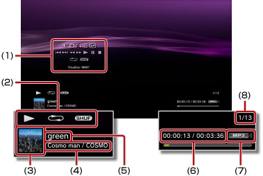

Música > Uso del panel de control
Uso del panel de control
Puede realizar diversas operaciones mediante el panel de control en pantalla. El panel de control se puede mostrar u ocultar pulsando el botón  .
.
Control de volumen

Permite ajustar el nivel del volumen de salida del contenido reproducido en  (Música). Es posible seleccionar entre nueve niveles.
(Música). Es posible seleccionar entre nueve niveles.
Nota
El sonido puede distorsionarse si el nivel de salida de volumen es demasiado alto. Si esto ocurre, disminuya el nivel de salida de volumen.
Reproductor visual
Es posible seleccionar entre varios fondos de pantalla para que se muestren durante la reproducción de contenido.
Nota
No es posible cambiar el fondo del Reproductor visual durante la visualización de contenido de  (Foto) o
(Foto) o  (Navegador de Internet).
(Navegador de Internet).
Agregar a lista de reproducción
Agrega el contenido que se está reproduciendo a la lista de reproducción.
Nota
Sólo los archivos de música que se han guardado en el disco duro se pueden agregar a la lista de reproducción.
Eliminar
Elimina el contenido que se está reproduciendo.
Nota
Sólo los archivos de música que se han guardado en el disco duro se pueden eliminar.
Visualizar
Muestra el estado y otro tipo de información durante la reproducción. El tipo de información variará en función del contenido que se reproduzca.

(1) |
Panel de control |
|---|---|
(2) |
Icono de estado |
(3) |
Icono de la pista |
(4) |
Nombre del artista / nombre del álbum |
(5) |
Nombre de la pista |
(6) |
Número de la pista / número total de pistas |
(7) |
Codec |
(8) |
Tiempo transcurrido de la pista / tiempo total |
Anterior
Permite regresar al principio de la pista actual o anterior.
Siguiente
Permite desplazarse hasta el principio de la pista siguiente.
Retroceso rápido / Avance rápido
Avanza o retrocede rápidamente el contenido reproducido. Si mantiene pulsado el botón  , se avanzará o retrocederá rápidamente el contenido durante el tiempo que lo mantenga pulsado.
, se avanzará o retrocederá rápidamente el contenido durante el tiempo que lo mantenga pulsado.
Reproducir
Inicia la reproducción del contenido.
Pausa
Introduce una pausa temporal en la reproducción.
Detener
Detiene la reproducción.
Repetición
Reproduce el contenido de forma repetida. Es posible seleccionar entre tres modos de repetición al pulsar el botón .
 |
Reproduce un elemento del contenido repetidamente. |
|---|---|
|
Reproduce todo el contenido repetidamente. |
| Sin visualización | Cancela la reproducción repetida y reproduce todo el contenido en orden. |
Aleatorio
Reproduce el contenido en orden aleatorio.